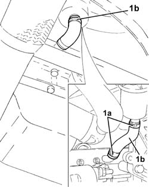

1080D30 engine oil recovery pipe - r + r
- Path
- Procedures > 10 ENGINE UNIT > 1080 EXHAUST EMISSION CONTROL SYSTEM > 1080D crankcase vapour/gas recirculation system > 1080D30 engine oil recovery pipe - r + r
- Kind
- repair procedure (removal / refitting; the operation number is the code)
- Applies to
- engines: 1.3 JTD 16v; all production periods
- Interactive page
- https://sloeber94.github.io/elrnDB-fPnd/en/#/2752626
Applies to: engines: 1.3 JTD 16v; all production periods
 Removing
Removing
 Refitting
RefittingRemove the car from the ramps.
1. Loosen the bands (1a) and remove the engine oil vapour recovery pipe (1b).

Applies to: engines: 1.3 JTD 16v; all production periods
Refitting
RemovingFit the engine oil recovery pipe in place and fasten it using the bands.